initial
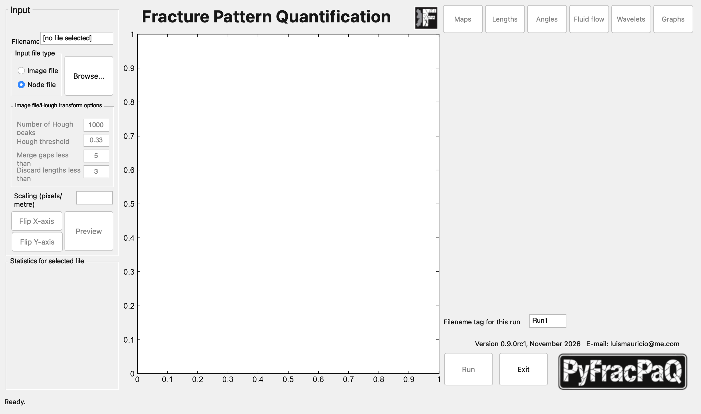
PyFracPaQ 0.9.0rc1. Capturas nativas Cocoa; janela inicial, Preview, seis abas, mensagens e diálogo de Wavelets. 48 capturas das telas em seis contextos, dez capturas adicionais de diálogos/fluxos, sete verificações nativas e 81 testes GUI passaram. As mensagens de erro mostradas foram provocadas para conferir a validação e a recuperação.
Encerrado no ponto 1 por instrução do usuário. Os pontos 2–5 não foram iniciados.

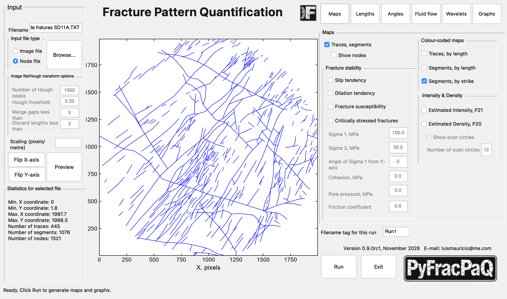

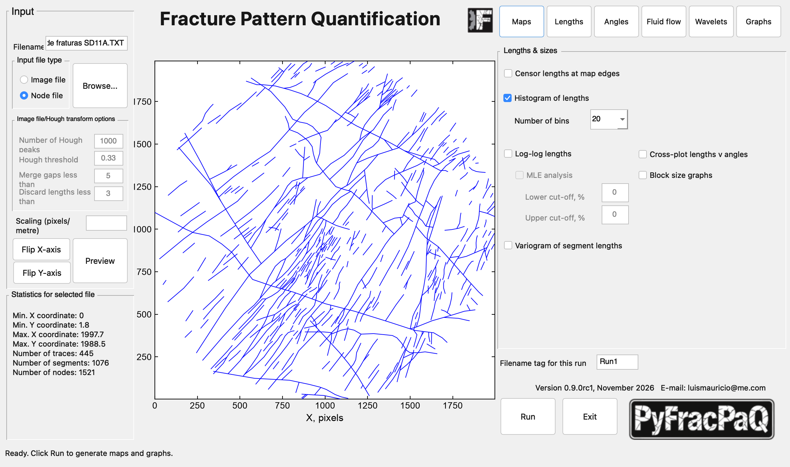
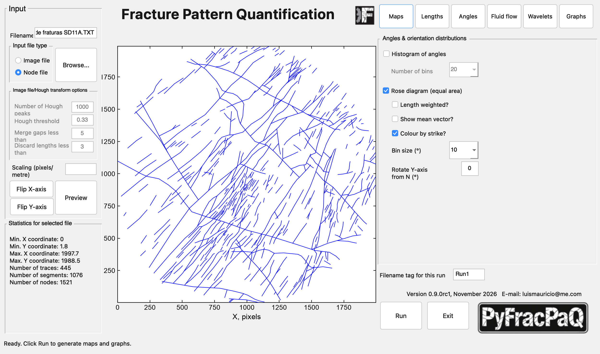
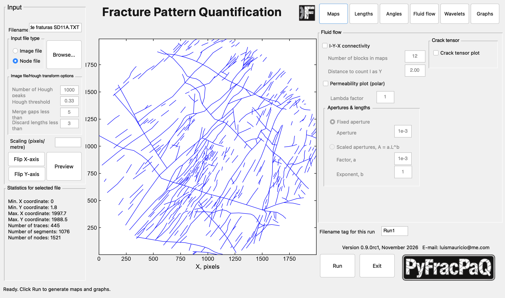
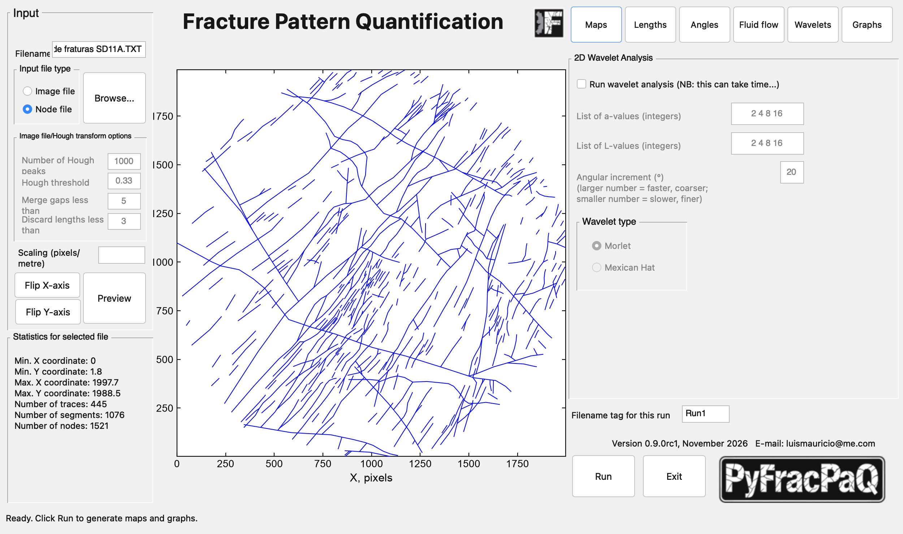
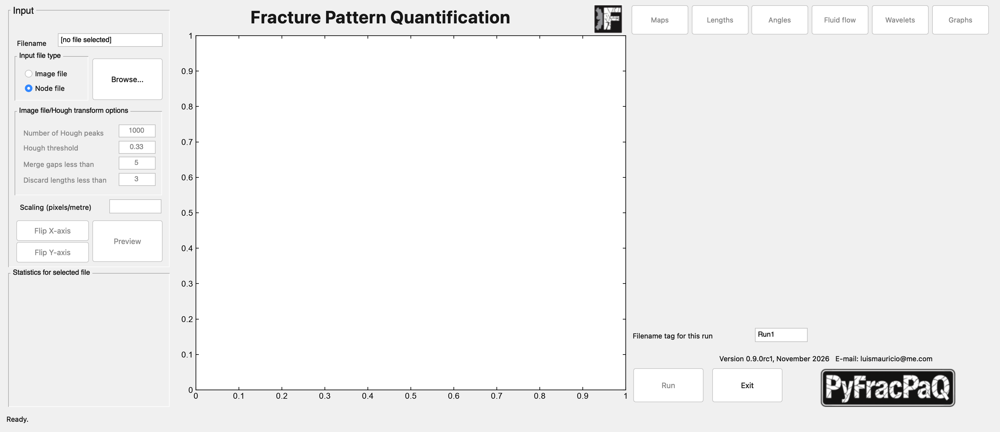
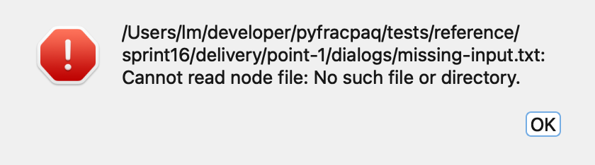
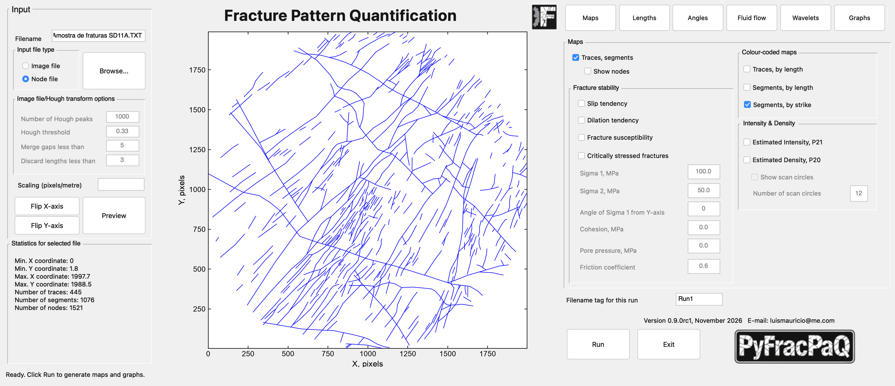
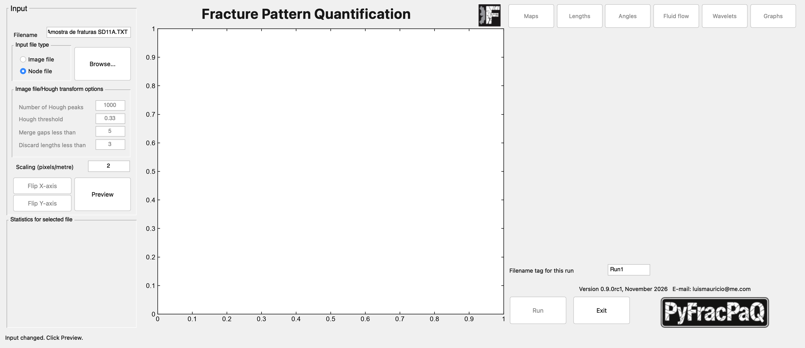
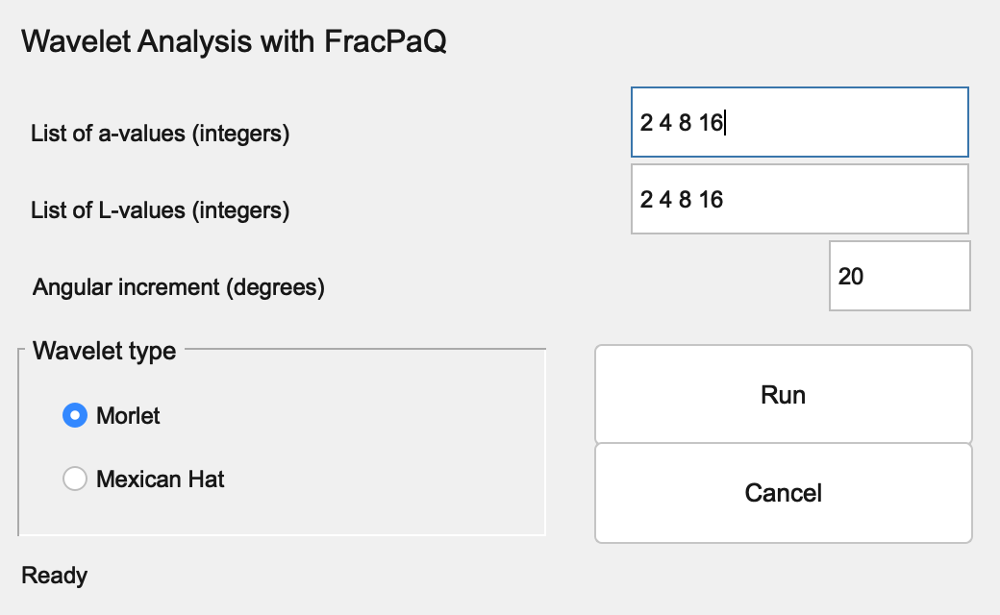
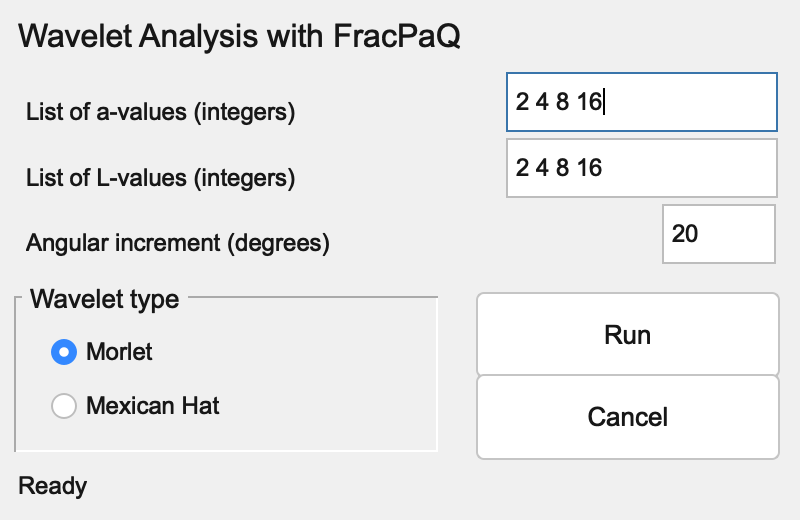
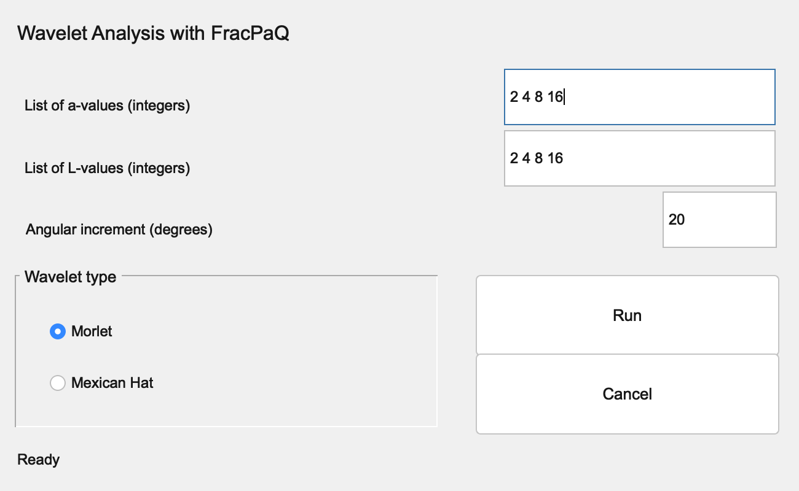
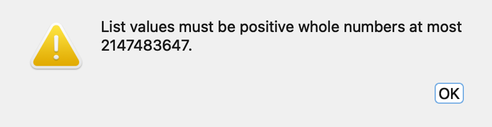